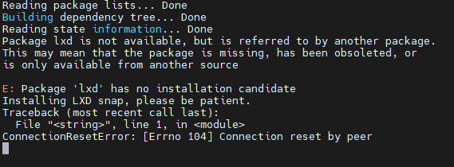
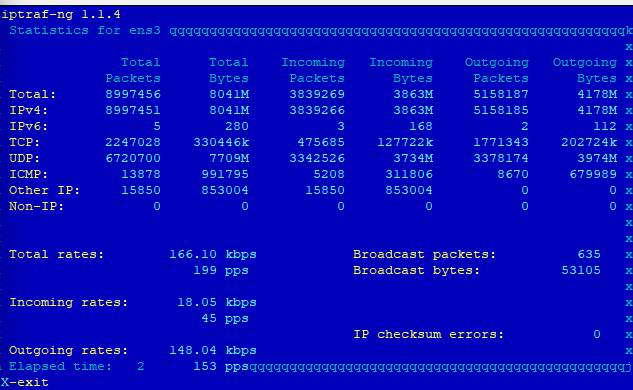
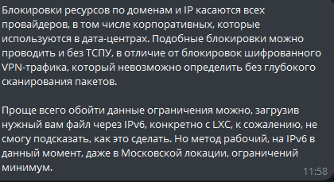
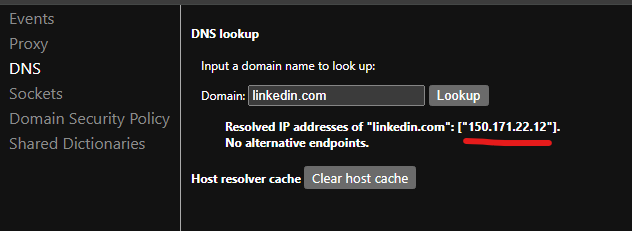
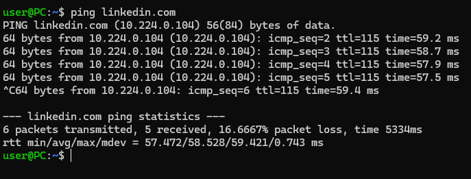
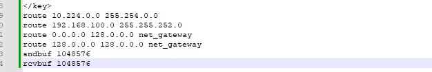
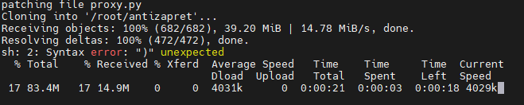
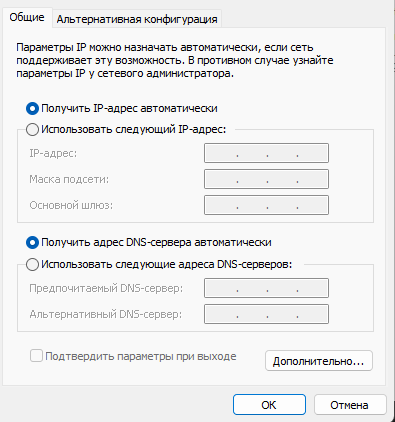

Скрипт для автоматического развертывания AntiZapret VPN Container
Разблокирован YouTube и часть сайтов блокируемых без решения суда
Затестил, полет отличный! Спасибо
Заметил что на слабой VPS где обычный OpenVpn по UDP дает спокойно под 200 Мбит, с Антизапретом по TCP плохо тянет ютуб, 5-10 Мбит, сделал версию 2 - перенастроил создание контейнера на работу по UDP и упростил шифрование, ютуб стал летать!!!
Отлично!
Только стоит прояснить момент с “Указать вручную LXD snap track = 4.0”, потому что, например, я чайник и не представляю, как это снапу указать (кстати, возможно из-за этого в Ubuntu 22.04 поставился LXD 5, но с ним, вроде, работает нормально)
А при установке спросит LXD snap track, на экране вопрос будет
Ну я на 20 ставил, там 3 и 4 были
Не знаю как без вопроса сделать, типа чтоб последнюю ставил автоматом
Если там ожидание пользователького ввода, то что-то вроде echo текст | программа 1>/dev/null.
увы, просто ждет когда энтер нажмут, там типа интерфейса и стрелками вверх-вниз можно выбрать версию
Обновил до 3 версии
сразу скажу, что не тестил, но
хорошо бы добавить и генерацию antizapret-client-tcp.ovpn
у меня udp на роутере, а tcp – на смартфоне
плюс вот такое
Контейнер VPN АнтиЗапрета для установки на собственный сервер - antizapret.prostovpn.org / АнтиЗапрет на собственном сервере (self-hosted) - NTC
для ubuntu, по-моему, это zram-config
А можете написать список действий, что бы не проксировать ютьюб?
Удалить youtube|youtu|ytimg|ggpht|googleusercontent из exclude-hosts-dist.txt и тд?
Для удаления ютуба:
-
Убрать добавление в include-hosts-custom.txt:
youtube.com
youtu.be
ytimg.com
ggpht.com
googleusercontent.com
googlevideo.com
google.com
googleapis.com -
Убрать команду:
sudo lxc exec antizapret-vpn – sed -i “/\b(youtube|youtu|ytimg|ggpht|googleusercontent)\b/d” /root/antizapret/config/exclude-hosts-dist.txt -
Убрать команду:
sudo lxc exec antizapret-vpn – sed -i “/\b(googleusercontent)\b/d” /root/antizapret/config/exclude-regexp-dist.awk
Попробую еще раз провести эксперимент с TCP, но судя по тому что пишут сами разработчики OpenVpn - TCP это костыль для обхода блокировок протокола UDP
zram пока добавлять не буду, на 20 убунте 1Гб оперативки хватает
Всё вроде огонь, но прошу протестировать (у кого есть возможность) обновление АПКшек через Google Play.
У меня сейчас болтаются две приложухи которые можно обновить, нажимаю “обновить” > начинают крутиться колёсики “подождите”, но сами обновы не скачиваются. 
При этом на play.google.com заходит, как будто с правилами googleusercontent чего-то не хватает/много лишнего.
Да, вижу что не скачивает обновления, если впн выключить то качает
Если будет понимание какой хост добавить, я исправлю скрипт
По моему ощущению TCP хуже работает, даже с опцией tcp-nodelay
Добавлять в скрипт поддержку TCP не буду и отключил даже сервис чтоб зря не ел ресурсы, кто уже ставил, выполните и перезагрузите:
lxc exec antizapret-vpn – systemctl disable openvpn-server@antizapret-tcp
Методом перебора выяснил, что удаление googleapis.com из /root/antizapret/config/include-hosts-custom.txt вопрос решило.
Спасибо за скрипт, удобней развертывать, чем когда первый раз ручками всё и не без танцев с бубнами.
Не смог только выделить куда приложение Youtube на смарт тв с Tizen и на tvOS обращаются на открытии, потому что даже интерфейс не грузиться. Кто-нибудь сниффил трафик чтобы понять?
Только там проблема, мобильный, и приложение на мобиле, браузерный и пк youtube - всё везде работает при этом…
Тоже самое на Oculus Quest не открывает ни одно приложение
Если что то не открывается, то попробуйте выполнить команды обновления, может в кеш настоящие попали адреса, не поможет - можно попробовать изменить файл с личным списком антизапрета include-hosts-custom.txt и опять обновить:
sudo lxc exec antizapret-vpn – nano /root/antizapret/config/include-hosts-custom.txt
Потом выполните команды для обновления списка антизапрета и очистка кеша днс:
lxc exec antizapret-vpn – sh -c “LANG=C.UTF-8 /root/antizapret/doall.sh”
lxc exec antizapret-vpn – sh -c “echo ‘cache.clear()’ | socat - /run/knot-resolver/control/1”
Друг столкнулся с блокировкой портов на работе, переделал скрипт на 443 порт - помогло, оставлю версию скрипта с 443 портом
Как сделать, чтобы если по каким то причинам VPN сервер разорвет соединение с роутером, то чтобы происходил реконект как в протоколе TCP?
OpenVPN, вроде, при разрыве по умолчанию пытается установить соединение.
В любом случае это вопрос к клиенту на роутере, т.к. клиент инициирует подключение.
Автор, openvpn в районе 2.6 версии значительно увеличил скорость работы т.к. перенес работу в ядро, я бы советовал в контейнере обновлять его:
-
mkdir -p /etc/apt/keyrings
-
curl -fsSL https://swupdate.openvpn.net/repos/repo-public.gpg | gpg --dearmor > /etc/apt/keyrings/openvpn-repo-public.gpg
-
echo “deb [arch=amd64 signed-by=/etc/apt/keyrings/openvpn-repo-public.gpg] Index of /debian/openvpn/release/2.6/ buster main” > /etc/apt/sources.list.d/openvpn-aptrepo.list
-
apt update && apt-get upgrade -y
Добрый день
Выбивает ошибку в процессе установки
Reading package lists… Done
Building dependency tree… Done
Reading state information… Done
Calculating upgrade… Done
Get another security update through Ubuntu Pro with ‘esm-apps’ enabled:
traceroute
Learn more about Ubuntu Pro at Ubuntu Pro | Ubuntu
The following packages have been kept back:
python3-update-manager update-manager-core
0 upgraded, 0 newly installed, 0 to remove and 2 not upgraded.
Reading package lists… Done
Building dependency tree… Done
Reading state information… Done
Package lxd is not available, but is referred to by another package.
This may mean that the package is missing, has been obsoleted, or
is only available from another source
E: Package ‘lxd’ has no installation candidate
Image imported with fingerprint: 05c09dfe5e7f843b150bdaa65832f1e253b90b35cbc505b5a1283aadab12b51f
Creating antizapret-vpn
Device proxy_443_udp added to antizapret-vpn
Error: Error occurred when starting proxy device: Error: Failed to receive fd from listener process: Failed to receive file descriptor via abstract unix socket
Try lxc info --show-log antizapret-vpn for more info
Error: Instance is not running
Error: Instance is not running
Error: Instance is not running
Error: Instance is not running
Думаю изза lxd init
Здравствуйте! Заранее приношу прощения, если вопрос не по теме. Какой регион для VPS с Антизапретом нужно выбирать. Я читал, что антизапрет работает только на территории России
Спасибо, добавлю!
На ubuntu 24.04 ставить можно?
Можно, но нужно памяти 2гб
Регион VPS где не действует ограничение роскомнадзора
Понял, спасибо!
Пишет ошибку в установке lxd

Открой файл скрипта автора и прописывай в консоли команды вручную
Вчера тоже с этим столкнулся.
На Ubuntu 22.04 нужно ставить snap, а потом уже LXD
sudo apt update
sudo apt install snapd
sudo snap install lxd
Далее уже по инструкции или SH-нику с места где: sudo lxd init --auto
и тд
Большое спасибо
попробовал у себя, но что не получилось ничего
пробовал и в контейнер антизапрета заходить и без захода
Так вопрос, ядро то не обновилось, если 20 убунта, то нужно для новой версии опенвпн и убунту обновить
Обновил до 4 версии:
исправил установку lxd - все долно ставиться и в новых версиях
изменил разблокировку ютуба: оставил в исключениях только googlevideo.com
если не помогает, полная разблокировка в скрипте тоже есть
А получилось внутри контейнера поднять версию у openvpn до 2.6?
Кручу верчу подсказку от spong выше и у меня после третьей команды не хочет обновлять, сыпет что невалидный сурс на репозиторий
Спасибо. Ошибка с lxd действительно пропала, но заметил что ошибка есть в knot-resolver
Может buster надо поменять на вашу актаульную систему?
Ещё можно установить openvpn-dco-dkms для максимизации производительности.
В дескриптор службы надо добавить капабилити CAP_SETPCAP.
Проверка работы DCO драйвера для виртуального интерфейса: ip -details link show
Но как это работает в контейнере — не знаю, не пользовался контейнерами никогда.
Спасибо!
Да, недосмотрел, версию ovpn получилось поднять до 2.6.
А вот openvpn-dco-dkms не хочет собираться под ядро в контейнере, так что надо будет покурить на досуге.
Понятно. Не понимаю, зачем этот контейнер нужен. Написал бы кто скрипт развёртывания с админкой без контейнеров.
Подскажите пожалуйста а в чем может быть проблема. При вводе chmod +x ./antizapret-vpn.sh && ./antizapret-vpn.sh
Есть какой то ощутимый прирост от опенвпн 2.6 ?
И можно актуальный скрипт для этого
Пробовал на 24 убунте поставить опенвпн 2.6 - разницы с тем что в антизапрете по скорости как то не заметил
Можно оформить этого зверя как расширение для хром или файл конфигурации для Openvpn?
Для тех из нас, кто совсем деревня 
Разницы без собранного openvpn-dco-dkms никакой нет  Лично у меня оно в контейнере не собралось для ядра, а больше я пока и не копал.
Лично у меня оно в контейнере не собралось для ядра, а больше я пока и не копал.
решилось в итоге ребутом с отключением питания. похоже где-то в среднехолодном кэше лежали хвосты днс операторских на устройствах.
так что дело было не в контейнере.
Может я не увидел, то ткните носом. А какой ответ уважаемый камрад ValdikSS дал по поводу того что в нашем любимом сервисе не будет поддержки обхода ЗАМЕДЛЕНИЯ ютьюба, не проксирование! Ведь та же goodbyedpi на данный момент справляется, почему бы её функционал не добавить. А в случае полной блокировки ютьба, то там пусть уже пользователи сами ищут vpn и тд.
Обнаружил что для разблокировки ютуба не достаточно разблокировать googlevideo.com, тк ему в параметрах идет ип вашего устройства, а не впн, и он не отдает видео, добавил в исключения и youtube.com
Скрипт исправил, версия 4.1
я пробовал 2.6
но у него минималка AES-256-GCM как я понял, а это лишняя нагрузка на дохлые впс и роутеры
откатил до 2.4.7
128 есть:
https://openvpn.net/community-resources/reference-manual-for-openvpn-2-6/
А можешь скрипт написать для обновления до 2.6?
да оно там легко ставится
mkdir -p /etc/apt/keyrings
curl -fsSL https://swupdate.openvpn.net/repos/repo-public.gpg | gpg --dearmor > /etc/apt/keyrings/openvpn-repo-public.gpg
echo "deb [arch=amd64 signed-by=/etc/apt/keyrings/openvpn-repo-public.gpg] https://build.openvpn.net/debian/openvpn/release/2.6 buster main" > /etc/apt/sources.list.d/openvpn-aptrepo.list
apt-get update && apt-get install openvpn
вот инструкция OpenvpnSoftwareRepos – OpenVPN Community
только оно без DCO не имеет смысла, а его я не пробовал
а еще там ключи дохлые уже
предварительно сделать
apt-key del 6A1F4009
wget -qO - https://download.opensuse.org/repositories/home:/CZ-NIC:/knot-resolver-latest/Debian_10/Release.key | apt-key add -
подскажите, все вроде поставилось, к впн подключился, но заблокированные сайты так и не работают.
Надо попробовать в конфиг сервера и клиента добавить
sndbuf 0
rcvbuf 0
А то 20 мбит для ютуба маловато конечно) сервер через WireGuard у меня пропускает 130-140 мбит. А вот через OpenVPN больше 20 не проходит.
Поэкспериментируйте, если через роутер то не удивительно, многие не тянут опенвпн, попробуйте еще добавить вместо 0: 524288 или 1048576
Тестирую, на винде причем проблем вообще нету, закинул на debian конфиг тестанул беда есть. Что заметил у меня роутер Ultra 2 через Wireguard 100-120 мбит выдает, через OpenVPN 20-25.
sndbuf 393216
rcvbuf 393216
Щас вот с таким конфигом под UDP устраивает 30-35 мбит начал давать 4к 60fps удивительно но тянет так и оставил. Жаль что через WireGuard нельзя настроить аналогично OpenVPN, чтобы ходила только часть трафика через VPN.

А так на текущий момент 8 гигов полет нормальный.
Характеристики сервера:
Процессор: 2x Intel(R) Xeon(R) Gold 6226R
Виртуализация: KVM
AntiDDoS Не требуется
Комментарий к AntiDDoS: Base - 50Gbps/5Mpps грязный трафик
vCPU(vCores) 1vCPU
Память 1GB DDR4
Жесткий диск 20GB NVMe
Трафик: 1Gbps Premium
IPv4-адреса 1IP
IPv6 Не требуется
Операционная система (64-bit) Ubuntu 20.04 LTS
Так, не понятно, в контейнере можно же обновить antizapret из
git clone https://bitbucket.org/anticensority/antizapret-pac-generator-light.git ./root/antizapret
Почему то то что в контейнере он не обновляется, в ручную обновил - работает, патчить parse.sh не надо
Эксплуатирую этот контейнер уже несколько дней, роутер кинетик. Заметил, что ближе к вечеру, каждый день, “теряется” коннект к контейнеру.
Под теряется понимаю поведение: в роутере пишет, что подключён, но соединения до сайтов падают либо с network error, либо с dns nxdomain, как будто просто в какой-то момент перестаёт резолвить адреса. Можно ручками передёрнуть коннект внутри роутера, либо подождать минут 10 и всё становится нормально. Сталкивался кто-то с таким поведением? И что вообще может быть?
Как лечить такую ошибку? Ubuntu 24.04
попробовать
https://antizapret.prostovpn.org:8443/
https://antizapret.prostovpn.org:18443/
или какой нибудь прокси/внп
p.s. выбор хостинга для антизапрета где применяются баны РКН/ТСПУ …
Попробуй поставить на пинг свой сервер, у тебя мб пинг пропадает с серваком, у меня подобных проблем нет, с момента запуска впитал около 10 гигов на 1 доме, и около 4 гигов на 2 доме, полет вообще без проблем не 1 сбоя не было.
Как можно посмотреть сколько подключенных устройств к впн на данный момент?
решено патчами
Да, сеть хостера шатало, переезд у них идёт))
Через OpenVPN Management, в telnet команда status.
Не особо понял, что не так, но ничего не работает. Даже в папке root ничего нету. Прикладываю текстовый файл с попыткой повторной установки. Знает кто, в чем дело может быть?
Лог Установка Антизапрет Ютуб.txt (3.8 KB)
У меня скрипт не проделывал всю работу.
Я его частями запускал, либо вручную каждую команду копировал.
Таким образом все поставилось
Скрипт обновлен до версии 5, теперь при установке в контейнере обновляется старый скрипт антизапрета от 2020 года до последней версии из репозитория https://bitbucket.org/anticensority/antizapret-pac-generator-light.git
Плюсы понятный - актуальная версия, не надо патчить parse.sh, занимает меньше памяти
В инструкции все написано как его ставить:
- Установить на VDS Ubuntu 20.04 или новее
- Загрузить этот файл на сервер в папку root по SFTP (например через программу FileZilla)
- В консоли под root выполнить:
chmod +x ./antizapret-vpn.sh && ./antizapret-vpn.sh - Скопировать файл antizapret-client-udp.ovpn с сервера из папки root
Скрипт надо запускать на чистой убунте, у вас уже стоит антизапрет, он поверх не ставит и не обновляет
Ставили на чистую убунту, что за ошибка?
Сейчас переустановил все заново, скрипт работает отлично.
В первый раз почему-то после создания контейнера не захотел идти дальше.
Спасибо
Посоветовали так сделать. Только как это сделать?

Даже загрузив файл, антизапрет на этом хостинге не заработает. Нужен хостинг за пределами России
Не сочтите за рекламу, но вот хостинг где работает антизапрет, регистрируйтесь по ссылке https://www.vdsina.com/?partner=9br77jaat2 - вам 10% скидка, мне бонус, поддержите так сказать автора скрипта)
Добавил в настройку опенвпн серевра:
txqueuelen 1000
fast-io
(в оригинальном антизапрете было txqueuelen 250, но я изначально убрал)
На слабой вдс с 1 ядром стало чуть пошустрее скорость, может процентов на 5-10% - конечно не очень много, но хоть что то
Обновил скрипт до 5.1
Строки нужно и у сервера и у клиента добавлять? Или только у сервера достаточно?
В скором времени нужно будет добавлять команду апдейта скрипта, чтобы систему каждый раз не переустанавливать, тут ладно можно много что ручками подправить благо, а вот новичкам сложно достаточно будет)
только у сервера эта настройка
Будет ли в скором времени поддержка DCO?
Я как только не гонял параметры, в целом остановился на таком варианте на сервере
txqueuelen 1000
tun-mtu 8192
sndbuf 3932106
rcvbuf 3932106
push “sndbuf 3932106”
push “rcvbuf 3932106”
Получилось около 30мбит по iperf3, что не всегда хватает для 4к видео (до самого сервера 150мбит). Хотя vps на 2 гига оперативы и диски ssd
Видимо много съедает то что оно в контейнере. Если у кого-то получится каким-то образом получить прирост скорости то напишите пожалуйста как
Тут надо учесть не только железо твоего сервера, но и компа, к примеру у меня комп i9-10900k в 8к видео с сервера вытягивает 250-350 мбит по openvpn. А вот через роутер Keenetic Ultra 2 35 мбит/сек и все добрый вечер больше я получить не могу…
для того чтобы подключение заработало как надо на роутерах keenetic надо в ovpn дописать:
pull-filter ignore block-outside-dns
route 192.168.1.1
где 192.168.1.1 адрес - это днс от провайдера получаемый на роутер
интернет фильтры должны быть выключены
DCO в ближайшее время не планировал, она как я понимаю еще даже не в релизной ветке
Вопрос касаемо обновлений, я так понимаю чтобы ставить любые обновления нужно сносить систему и ставить заново получая каждый раз новые конфиги на openvpn?
да, к сожалению пока так, сносить все и ставить, можно сохранять ключи из опенвпн и заново подкладывать потом, после обновления, но что точно нужно сохранить и от куда я пока не подскажу
Понял, ну тогда пока посижу на вчерашней версии в целом все устраивает, а какие нибудь нововведения которые вижу подкладываю в готовую версию, дальше будем посмотреть) из минусов это то что нужно обновлять blacklist решил кроном полет нормальный раз в сутки будет подгружаться. Остальное вроде и так норм)
так doall.sh выполняется по таймеры раз в 6 часов
Так я с этого скрипта и ставил. Больше ничего, кроме wireguard не стояло
Хм, я думал это было добавлено с недавним обновлением в котором ты писал выше
“Плюсы понятный - актуальная версия, не надо патчить parse.sh, занимает меньше памяти”
кто-нибудь пробовал в качестве тоннеля использовать vless вместо ovpn ?
в текущей ситуации ovpn не представляется надежным и не подверженным блокировкам )
Подскажите, после того как поднял АнтиЗапрет, как я могу дать доступ из вне? Прописывал порты в переадресацию на роутере 443 и 1194, не работает. В remote указывал свой внешний ip, у меня статика
Получилось. Походу, с другими VPN конфликтует. В частности с WireGuard Easy. Поставил сначала без него - работает. С ним - не работает
У меня поднят одновременно и wireguard и антизапрет, проблем нет. мб порты одинаковые используешь, попробуй в wireguard порт сменить
Супер, работает. Проверил на телефоне с заведомо блокнутой сети к ovpn подключиться - сайты доступны, ютюб начинает летать.
Только никак не могу для Keenetic приделать - к впн подключается, но ютюб тормозит, и блоченые сайты остаются блочеными…
Вероятно, что-то мешает от инструкции по подключению к общему антизапрету. Интернет-фильтр вырубил… никто не столкнулся?
ДНС роутере должен быть от твоего антизапрета
так же клиенты должны или ДНС антизапрета (?) получать или на роутере в форвардинге только антизапрет твой
Тут тема есть как настроить на кинетике, я делал с интернет фильтром у меня завелось. Пока полет нормальный не жалуюсь. Если следовать четко инструкции без проблем получается, но есть момент у меня Keenetic Ultra 2 с двухъядерным процессором максимум чего смог добиться 30 мбит/сек, на Keenetic Giant во 2 доме 40-45 мбит выдает, для 4к видео достаточно в целом, но если Keenetic более дохлый я бы не заморачивался…
Подскажите пожалуйста, как настроить на роутере с прошивкой Padavan, обычный antizapret ставил но давно, просто там нужно все прописывать в ручную, и ещё хотел узнать на ПК телефоне и ТВ, кроме как через OpenVPN можно настроить?)
И у меня отсутствуют папки antizapret в root так и должно быть?)
Большущее спасибо за такую инициативу! Развернул у себя - работает! Ютуб грузит уверенно, инстаграмм немного медлил, но добавил его поддомены в список разрешенных - и тоже летает!
Правда переживаю за то, что OpenVPN РКН умеет блочить, можем ли ждать контейнер с VLESS + xtsl-reality?
Было бы прикольно его интегрировать с 3x-ui панелькой!
И еще раз спасибо - все работает!
Подскажи пожалуйста, какие именно поддомены добавил и в какой-именно файл? Тоже напрягает скорость работы инсты) Ну и плюсую за контейнер vless +xtsl. OpenVPN явно временно решение
антизапрет построен на своем DNS+openvpn ибо проксируются только “забаненое”
https://bitbucket.org/anticensority/antizapret-vpn-container/src/master/
Какие преимущества перед обычным VPN?
Обычные VPN направляют трафик ко всем сайтам и сервисам через свои серверы, что понижает общую скорость работы интернета. АнтиЗапрет направляет трафик на свои серверы только к сайтам и сервисам, заблокированным на территории Российской Федерации, и не снижает скорость открытия других сайтов.
Господа, может кто сталкивался с такой проблемой: openvpn клиент настроен на роутере Keenetic, контейнер развернут на хостинге. Вроде всё работает, но периодически в браузере доменные имена резолвятся в настоящие IP адреса, хотя в консоли винды пинг выдает адрес, выданный контейнером антизапрет.
Вот пример:
В браузере:

В консоли (WSL):

Закрыть-открыть браузер решает проблему на какое-то время. Причем, неправильно может зарезолвиться только один из сайтов, в то время как другие нормально открываются через VPN.
Буду очень благодарен, если поможете.
что то похожее ИМХО было в DNS-резолв при нескольких VPN-подключениях в Windows - #9 by MadHypnofrog
Вроде там немного другой кейс. У меня почему-то браузер резолвит другие адреса, нежели ping в консоли. Вот этого я вообще никак понять не могу. Единственную подходящую настройку в chrome нашел “Использовать безопасный DNS-сервер” - пробовал ее включать/отключать - результата нет.
Всегда при запуске браузера всё работает нормально (и доменные имена резолвятся в 10.244.x.x), затем через разные промежутки времени какой-то адрес может зарезолвиться в браузере в настроящий IPшник, и соотв., сайт становится недоступен.
Youtube вообще смотреть в таком формате не получается: минут 5-30 норм, потом приходится перезапускать браузер.
@ValdikSS в соседней теме вы вроде подсказывали куда копать. Может у вас есть идеи, в чем может быть проблема?
PS: Если что, в Keenetic настраивал маршрутизацию через Интернет-фильтры. В разных профилях указаны разные DNS адреса:
Столкнулся с такой бедой, перестал работать AdGuard после перехода на свой сервер с авто скриптом, и чето как то стало плачевно. На просторах форума нашел совет добавить dns adguard на сервер.
lxc exec antizapret-vpn -- nano /etc/knot-resolver/kresd.conf
policy.add(policy.all(policy.FORWARD({'94.140.14.14'})))
policy.add(policy.all(policy.FORWARD({'94.140.15.15'})))
И чет после добавления двух dns адресов в файле у меня благополучно все сдохло, и вообще не 1 сайт не открывается.
Хотя у себя вроде прописал корректно:
|------------------------------------------------------------------------------------------|
| WinMTR statistics |
| Host - % | Sent | Recv | Best | Avrg | Wrst | Last |
|------------------------------------------------|------|------|------|------|------|------|
| KEENETIC-ULTRA - 0 | 67 | 67 | 0 | 0 | 1 | 0 |
| 192.168.100.1 - 93 | 14 | 1 | 75 | 75 | 75 | 75 |
Если сделать трасировку ip адреса DNS AdGuard, он правильно уходит на свой AntiZapret.
Мож что делаю не так, кто сталкивался подскажите. А то чет с рекламой вообще грустно стало жить 
P.S. разобрался надо было просто подождать после рестарта антизапрета, трафик видимо ходит не сразу…
Похоже, дело не в портах. Оперативки было мало. Посмотрел сколько с антизапретом свободно на 24.04. Было 60 мегабайт. Поставил 20.04. Стало 400. И сейчас вместе без проблем работают
Инстаграмм домены отсюда
А сколько у тебя ее всего? У меня при 20.04 Антизапрет + WireGuard + vless занято 360 из 981.
Поддомены instagram.com дополнительно добавлять не нужно, достаточно прописать instagram.com и cdninstagram.com - но они уже есть в списках
Подскажите, как правильно настроить на роутере с прошивкой Padavan, ни в какую не хочет запускаться и кроме как через OpenVPN никак не запустить? Через прокси или DNS?
Если это происходит всегда и постоянно, возможно, у вас несколько сетевых интерфейсов на компьютере, у каждого из которых указан DNS? Windows параллельно резолвит DNS - кто быстрее ответил, тот ответ и берётся.
Также такое у меня было с IPv6 - IPv6 DNS на Keenetic не перехватывался. Не знаю, как сейчас.
Вы уверены что в include-hosts-customs нужно добавлять youtube.com?
Я подтвердить это не могу, при добавленном googlevideo.com (то есть без youtube.com) видосы воспроизводятся, интерфейс грузится ок (на мобилке и ПК), тем самым оставляя нам регион РФ.
Некоторые сервера googlevideo.com не отдают видео если ваш ип разный на youtube.com и googlevideo.com, для этого оба сайта добавлены в исключения и ходят через впн и ваш ип становится для них одинаковый
youtube.com тоже есть смысл добавить, чтобы блогеры получали монетизацию которую им отключили) + некоторые видео висят без youtube.com
Хорошая идея, добавил в скрипт AdGuard DNS для блокировки рекламы, отслеживающих модулей и фишинга, актуальная версия скрипта 5.4
При выполнение скрипта версии 5.4 получаем
Blocked domains: 212879 result/hostlist_zones.txt
iplist_all: 152381 result/iplist_all.txt
iplist_special_range: 9 result/iplist_special_range.txt
iplist_blockedbyip: 6207 result/iplist_blockedbyip.txt
iplist_blockedbyip_noid2971: 6207 result/iplist_blockedbyip_noid2971.txt
Job for kresd@1.service failed because the control process exited with error code.
See "systemctl status kresd@1.service" and "journalctl -xe" for details.
В скрипте заметил, что echo перенаправляет вывод затирая ( “>” ) штатный конфиг knot-resolv, а не делает append ( “>>”).
Ещё через VPN не обновляются приложения через Google Play, постоянно висит статус pending
у вас на кинетике случаем других впн нет ? у меня такое было когда сверху wireguard стоял , и там был днс 1.1.1.1 по умолчанию, он добавлял свой маршрут до единиц и антизапрет не работал
Да, мой косяк, спасибо, исправил
Bitbucket на данный момент откис? Есть зеркала?
К сожалению, проблема осталась после изменения
Аналогично @daemonpnz
Blocked domains: 212967 result/hostlist_zones.txt
iplist_all: 152413 result/iplist_all.txt
iplist_special_range: 9 result/iplist_special_range.txt
iplist_blockedbyip: 6207 result/iplist_blockedbyip.txt
iplist_blockedbyip_noid2971: 6207 result/iplist_blockedbyip_noid2971.txt
Job for kresd@1.service failed because the control process exited with error code.
See "systemctl status kresd@1.service" and "journalctl -xe" for details.
хм, вроде правка то ерундовая, поднял вдс, протестирую что случилось
да, нашел - кавычки потерялись при вставке, поправил в версии 5.5
Спасибо за наводку, обязательно это проверю и отпишусь.
Физически, сетевая карта у меня одна, но от кучи VPNов куча разных виртуальных интерфейсов. Завтра попробую посмотреть, что там указано, в таком случае стоит везде указать dns роутера?
Поведение всегда похожее. При выполнении пинга всегда резолвится “правильный” IP. Также, всегда при запуске браузера все работает нормально. Но спустя N минут работы браузера начинаются приколы, что-то открывается, что-то нет.
Нет, на роутере только 1 соединение openvpn. Но на компе есть куча других vpn (нужны в т.ч. для работы). Мб в них причина, но что делать пока не знаю, буду посмотреть.
У меня использовано 650 мб. Антизапрет + WireGuard Easy. С антизапретом было не меньше. Странно
у меня днс которые идут через антизапрет не пингуются с компа, проверьте , если у вас пингуются значит они идут через что-то другое
Помогло добавление redirector.gvt1.com в список antizapret/config/include-hosts-custom.txt
хочу сказать спасибо за этот скрипт! на 22.04, к сожалению, не завелось, сыпались какие-то ошибки, но на свежей вдс с 20.04 все встало хорошо, никаких лишних телодвижений не потребовалось
Спасибо за скрипт! Установил на VPS и прописал клиента на роутер (микротик).
Есть 2 вопроса.
- Можно ли изменить диапазон адресов и сам DNS c 192.168.100.1 на что-то другое? Совпадает с одной из существующих сетей. Если да, то как? Редактирования /etc/openvpn/server/antizapret.conf явно недостаточно.
- На телевизоре трафик youtube нормально ходит при воспроизведении видео, нет подтормаживаний. Но не отображаются превью, пустые карточки. Что-то можно/нужно добавить в include-hosts-custom.txt?
Здравствуйте,такая проблема
Через приложение OpenVpn всё работает,а пытаюсь закинуть конфиг на Tp-Link AX5400 и ничего не работет
Пишет соединение установлено,но обходы не работают,хотя через приложение конфиг работает
Есть идеи?
Рекомендацию для TP-Link я использовал

Коллеги, вот прям щас у кого как через контейнер работает ютуб?
Вот прям сейчас у меня в include-hosts-custom:
/youtube.com
/ytimg.com
/googlevideo.com
И в итоге нифига не работает (приложение на телефоне показывает “черный экран”).
VPS естественно не в РФ, и при подключении через WG с заруливанием всего трафика ютуб начинает показывает.
Что-то еще забыли?
DNS можно, но как не подскажу, посмотрите исходные файлы контейнера Bitbucket
Тут все настройки, как вариант, можете попробовать использовать днс 192.168.104.1 - он используется для TCP подключений, пропишите его для UDP
Сегодня заблокировали домен с превью видео ytimg.com - добавил в скрипт
Если у кого то не работает ютуб и вы нашли недостающий домен, пишите чего не хватает в вашем случае
мене сегодня хватило добавления только ytimg.com
Но скрипт обновил до 5.6 добавив в исключения:
Привет. Подскажи пожалуйста, почему может не работать на asus ax59u. Может что где дописать нужно. До этого стоял обычный антизапрет через конфиг openvpn. Сегодня развернул это на vps. Добавил конфиг на роутер, теперь не один сайт из черного списка не открывается.
Да, аналогично.
5 мин назад поставил. На ASUS не завелось.
У меня в итоге завелось. И работает идеально. Поставил dnsы авто от провайдера и удалил dnsы в Локальная сеть → Настройка сервера DNS и WINS.
Не могли бы Вы скрины прислать настроек роутера.
Что-то у меня ни туда и ни сюда.
Прошивка стоковая на асусе.
[АнтиЗапрет “общий”]
➜ ~ nslookup instagram.com
Server: 192.168.0.1
Address: 192.168.0.1#53
Non-authoritative answer:
Name: instagram.com
Address: 10.224.70.50
[АнтиЗапрет на VPS]
➜ ~ nslookup instagram.com
Server: 192.168.0.1
Address: 192.168.0.1#53
Non-authoritative answer:
Name: instagram.com
Address: 157.240.205.174
[Без антизапрета]
➜ ~ nslookup instagram.com
Server: 192.168.0.1
Address: 192.168.0.1#53
Non-authoritative answer:
Name: instagram.com
Address: 157.240.205.174
Добрый день, подскажите пожалуйста, как исключить хост от прохождения через VPN? В exclude конфигах есть постфикс custom и dist, в чем их отличие?
И как проверить что я стучусь к хостам напрямую, а не через VPN если исключаю их? Я добавил два хоста в exclude-hosts-custom.txt
Когда выполняю команду tracert Без VPN первым на маршруте идет хост провайдера, а когда выполняю команду с VPN первым же идет IP хоста который я исключаю, или я что-то не так проверяю?)
Я ж в личку прислал
@Tyman где то снова ошибка

Добрый день. Походу, проблема была действительно в интерфейсах. Навел порядок, уже день всё работает вроде стабильно. Большое спасибо))
PS: Для тех, кто будет искать решение проблемы:
Заходим в Панель управления\Сеть и Интернет\Сетевые подключения → заходим в каждый сетевой адаптер ПКМ → свойства → убираем галочку с ipv6 → двойной клик по пункту ipv4 → проставляем такие свойства:

- Все лишние адаптеры стоит отключить.
PPS: если у вас на компе были установлены VPN, какие-то из них могут после этих действий отвалиться, тогда нужно поиграться с настройками, мб где-то адреса DNS прописать вручную. Также, могут отвалиться адаптеры виртуальных машин (VMware, Virtualbox).
Здравствуйте,перестало грузится видео на телефоне и телевизоре
Сегодня говорили что заблочили специально,видео по ссылке работает,а приложения нет
Есть идея как пофиксить?
а как протестировать скорость по ovpn антизапрета этого? я так и не понял
ошибка в участке скрипта по добавлению adGuard
вручную все команды из скрипта выполнил, контейнер развернулся
sudo lxc exec antizapret-vpn – sh -c “echo ’
policy.add(policy.all(policy.FORWARD({'94.140.14.14'})))
policy.add(policy.all(policy.FORWARD({'94.140.15.15'})))’ >> /etc/knot-resolver/kresd.conf”
iperf3 -s (сервер в контейнере)
iperf -c (на клиенте)
ну если сделать, например, так
а я себе сделал, ибо иногда надо, то
на том же Speedtest by Ookla - The Global Broadband Speed Test спокойно
если как просто ВПН смысл антизапрета вообще (который строится на своем ДНСе и тем что только “нужное” проксирует) и тем более не самого удачного openvpn-а ?!
есть самые разные прокси / ВНПы
для чтения может понадобится ВПН. из РФ там заглушка
так, ну теперь вроде точно поправил скрипт - версия 5.8
поправил добавление AdGuard DNS
зачем городить огород, когда можно в приложении, хоть на смартфоне, хоть на компьютере моментально переключиться на полное проксирование при необходимости, и обратно
на том же самом своём собственном сервере
но кому как, в принципе
Конфигурационные файлы
- {in,ex}clude-{hosts,ips}-dist — конфигурация дистрибутива, предназначена для изменения автором Антизапрета
- {in,ex}clude-{hosts,ips}-custom — пользовательская конфигурация, предназначена для изменения конечным пользователем
- exclude-regexp-dist.awk — файл с различным заблокированным «мусором», раздувающим PAC-файл: зеркалами сайтов, неработающими сайтами, и т.д.
Если ваш хост добавлен в include-hosts-custom.txt, удалите от туда, если его там нет, то добавляйте в exclude-hosts-custom.txt
Потом выполните команды для обновления списка антизапрета и очистка кеша DNS
sudo lxc exec antizapret-vpn – /root/antizapret/doall.sh
sudo lxc exec antizapret-vpn – sh -c “echo ‘cache.clear()’ | socat - /run/knot-resolver/control/1”
я на двух разных VPS в Чехии попробовал развернуть версию 5.8, и чет не успех.
трафик на не заблокированные бегает, Ютуб открывает будто я за ТСПУ спрятан
rutube.TXT (2,0 КБ)
twitter.TXT (647 байтов)
youtube.TXT (647 байтов)
Скажите пожалуйста где скачать сам скрипт для кинетика, не понимаю где на гидхабе ссылка.
Это не скрипт для кинетика, это скрипт для запуска своего впн сервера на хостинге, к которому можно подключить в том числе и кинетик
Кто бы объяснил какой хостинг лучше использовать и как это все настроить.
Зайти по SSH на сервер, залить туда скрипт и выполнить команды, приведённые в шапке скрипта.
Без обид, но обучение пользованию SSH слегка выходит за рамки темы…
Лучше сделать это опциональным. Добавить в скрипт выбор, мол хотите блокировку рекламы? Y/N
Далеко не всегда она желательна, например, на мобильных устройствах это может помешать в донатных игропомойках получать бонусы за просмотр рекламы, а некоторые пользователи на роутере имеют локальный Adguard Home и предпочитают там рулить правилами, блокирующими рекламу.
Как вариант, можно закоментировать
Возможно добавлю выбор
А локальный адгуард на роутер не работает если включён впн
Прекрасно работает на кинетиках: достаточно в Adguard Home указать апстримом любые публичные DNS, а в конфиг АнтиЗапрета добавить route <апстримы Adguard Home>, чтобы создавались маршруты.
По итогу клиенты резолвят через роутер (где резолвером выступает AGH), он резолвит через публичные DNS, но, благодаря созданным маршрутам, запросы к этим апстримам уходят в VPN-туннель, где резолвятся АнтиЗапретом.
На всяких “падаванах” тоже должен работать, там просто надо выключить получение DNS от VPN-сервера, прскольку по умолчанию там в настройках прошивки включено “при подключении к VPN заменять локальный список DNS на то, что получено от сервера”.
А это, в конце скрипта оно обновляет списки, а потом перезапускает его. Не достаточно ли просто перезагрузки?
Вчера в ТВ версии ютуба превью-картинки не грузились. Хотя сами видео работали. Было у кого-то что-то подобное? Думаю, домены, может, какие дописать нужно. Или в самом приложении проблема
с задержкой но картинки грузились, заметил после того как на работе перестал вообще открываться youtube.com
Буду вам очень признателен если подскажите какие-нибудь хостинги где можно было бы поднять такой сервер.
не понимаю, в итоге все равно используется днс от Антизапрета, если не использовать его то заблокированные ресурсы будут получать реальные ип а не 10.224…
почитайте эту тему, вчера обсуждалось, для беспроблемной работы ютуба рекомендуется добавить в исключения:
youtube.com
googlevideo.com
ytimg.com
ggpht.com
googleapis.com
gstatic.com
Всем ку!
Работало все по инструкции из темы на этом форуме: Обход блокировок в России через АнтиЗапрет на прошивке Keenetic.
Из-за ютуба поставил скрипт на впс сервер, работает, но есть странности - периодически ютуб, торренты и некоторые заблоченные сайты не открываются, помогает несколько перезагрузок страницы. Раз заметил, что не открывались все сайты, кроме заблоченного.
В файле antizapret-client-udp.ovpn скаченного с сервера из папки root добавил строчки:
pull-filter ignore block-outside-dns
route 192.168.1.1
Выключил интернет фильтры. Так не работало, в директиве route указал 8.8.8.8, заработало и работает с включенными интернет фильтрами.
Сейчас настроено так: на роутере включены интернет фильтры и для системного профиля выбран антизапрет. Днс провайдера игнорирутся, транзит запрещен, включены DOH днс. Для антизапрета создан профиль днс с гугл днс.
Подскажите, пожалуйста, что поправить надо.
И в логах роутера появились такие сообщения:
AEAD Decrypt error: bad packet ID (may be a replay): [ #31762 ] – see the man page entry for --no-replay and --replay-window for more info or silence this warning with --mute-replay-warnings
При использовании клиента через АнтиЗапрет на прошивке Keenetic эта ошибка не появляется.
Гугл показал, что это может быть протокол UDP/TCP, значение MTU, конфигурация клиента OpenVPN. Была предпринята попытка атаки MITM, но все попытки были отклонены OpenVPN. Плохо настроенные маршрутизаторы в Интернете повторно отправляют пакеты, которые уже были получены.
И что код “mute-replay-warnings” в пользовательской конфигурации может решить эту ошибку.
Кто-нибудь сталкивался с этой ошибкой?
Спасибо!
2 варианта:
пропадает связь с твоей впс которую ты арендовал
слабый кинетик.
в моем случае 10 летняя Keenetic Ultra 2 справляется проблем не вижу такого характера, + Keenetic Giant тоже проблем не вижу. Ну и с сервером у меня проблем нет OpenVPN держится по 2-3 без падений линка.
у меня ультра 1811, до впс и пинг и трассировка стабильны.
апд: в итоге всё постепенно запроксировалось (не знаю, почему так со временем), но kemono.su не смог завести, почитал тему о нём https://ntc.party/t/kemonosu-%D0%BD%D0%B5-%D0%BE%D1%82%D0%BA%D1%80%D1%8B%D0%B2%D0%B0%D0%B5%D1%82%D1%81%D1%8F/8156/29, решения не нашёл
Возможно, кто-нибудь знает? Айпи-то не российский на впс (хостер зарубежный)
не понимаю, в итоге все равно используется днс от Антизапрета
Клиент → роутер c Adguard Home (возвращает клиенту в ответ на рекламные домены NXDOMAIN) → Antizapret
Adguard Home стаится как промежуточное звено между клиентом и Антизапретом. Задача AGH - самостояльно резолвить рекламные домены в “такого домена не существует”, а всё остальное (не-рекламные домены) резолвить через АнтиЗапрет.
OPKG не включал, мож правило висит на очищение маршрутов? Еще варик DNS могут пересекаться, у меня был момент что https dns adguard был для всех + для AntiZapret и была аналогичная беда… Исправил удалением https dns из всех подключений оставил только Google в профиль антизапрета добавил ipv4 adguard и нормально проблем нет.
OPKG не включал и правил на очищение маршрута тоже нет. Гугловские днс только для антизапрета. Для всех клиентов используется профиль присвоенный сегменту, а сегменту присвоен профиль антизапрета. Т.е. может быть причина из-за включенных DOH в настройках днс? и их надо сносить? У тебя получается в конфиге антизапрета днс адгуарда, а в настройках днс на роутере только гугловские?
Заметил что с антизапретом почему-то не резолвится домен mtsbank.ru, ssoauth.mtsbank.ru и возможно другие.
В исключение добавил, но не помогло.
nslookup mtsbank.ru
Server: 192.168.100.1
Address 1: 192.168.100.1
Name: mtsbank.ru
Address 1: 185.163.159.137
nslookup ssoauth.mtsbank.ru
Address: 192.168.1.100
DNS request timed out.
timeout was 2 seconds.
DNS request timed out.
timeout was 2 seconds.
DNS request timed out.
timeout was 2 seconds.
DNS request timed out.
timeout was 2 seconds.
*** Превышено время ожидания запроса
nslookup beeline.ru
Address: 192.168.1.100
Не заслуживающий доверия ответ:
╚ь : beeline.ru
Address: 217.118.87.98
Повторяется регулярно.
Может есть какая-то возможность дебажить работу резолвера и сервера? Логи там?
Я их расширение скачал “Обход блокировки Рунета” и просто когда сайт не грузит врубаю его и тыкаю на кнопку Антизапрет и через 5 сек делаю ф5 все работает.
Подскажите, как я могу поменять днс на сервере? Именно тот, что определяется вместе с айпи на whoer. Какая строка в конфиге овпн (или возможно вне него) за это отвечает?
Можно и так сказать, я отключил провайдерский днс полностью, и для провайдера дал гугл днс На фото ниже покажу:


Сделал именно таким макаром, yandex dns на случай если dns adguard лягут, а то я как то без инета остался, ну и понятное дело в конфиге openvpn нужно было прокинуть эти dms route
- дописал конфиг перед ca
pull-filter ignore block-outside-dns
route 94.140.14.14
route 94.140.15.15
route 77.88.8.8
route 77.88.8.1
sndbuf 393216
rcvbuf 393216
Ура! Удалось избавится от контейнера, буду готовить новый скрипт! Как и ожидал, виртуализация съедала прилично ресурсов, и антизапрет запущенный на Debian 10 показал прибавку скорости более чем в 2 раза: с 70 до 180 Мбит!
А вот и хорошие новости приехали, я так понимаю можно будет даже и учетки разные сделать.
Можно добавить сервера Brawl Stars в антизапрет?
можно, я знакомому clash of clans добавил чтобы с мобилки заходило.
адреса бы,какие требуется добавить
Ну в интернете можно найти такую информацию по запросу ip Brawl Stars. Главное гуглить а я не яндексить 
supercell.com
brawlstars.com
Пробуй 1 это платформа, 2 прямая ссылка.
Возможно, запись googleapis.com лишняя в include-hosts-custom.txt. Ломается TLS в imap гугл почте и др.
Учетки можно и сейчас сделать разные, опенвпн то в контейнере тот же самый, и настроить его можно точно так же как и без контейнера
googleapis.com используется на ютубе, и как я понимаю у многих он уже заблокирован, а судя по новостям где грозятся забанить и весь остальной гугл, проше уже добавить в исключение оставшиеся домены гугла
напишите где ломается, добавлю в исключения
Я добавил в конфиг
https://chatgpt.com/ и openai.com
перезагрузил антизапрет,но всёравно палит ип адрес
Есть ли решение?
с этими адресами не работают превьюхи видосов youtube на smart tv samsung, при этом на пк и андройде все ок… не подскажете - может для телека еще что - то добавить надо?
sudo lxc exec antizapret-vpn – nano /root/antizapret/config/include-hosts-custom.txt
Добавить
ab.chatgpt.com
auth.openai.com
auth0.openai.com
cdn.auth0.com
cdn.oaistatic.com
cdn.openai.com
chatgpt.com
files.oaiusercontent.com
tcr9i.chat.openai.com
tcr9i.openai.com
chat.openai.com
intercomcdn.com
oaistatic.com
oaiusercontent.com
Потом выполните команды для обновления списка антизапрета и очистки кеша DNS
lxc exec antizapret-vpn – /root/antizapret/doall.sh
lxc exec antizapret-vpn – sh -c “echo ‘cache.clear()’ | socat - /run/knot-resolver/control/1”
Мне помогло!
Всем привет! Подскажите, пожалуйста, кто разбирается, а Mikrotik (Hex S) не умеет подключаться к OpenVPN по UDP? Настройки такой не вижу, можно только порт указать. К SelfHosted не получается никак по UDP:443, хоть убей. И на стороне линукс машины нет в логах даже попыток
Вчера столкнулся с этой же проблемой на своем hapAC^2. Поддержка UDP появилась в RouterOS 7 и выше, на 6 только tcp. Выбора 2 - либо делать апгрейд до 7 версии системы или изменять конфигурацию openVPN под tcp. В скрипте есть закомментированные строки под tcp, можно использовать их.
По своему опыту скажу что udp на моем mikrotik-е работал не стабильно. При воспроизведении видео минут через 10 происходит разрыв, интернет полностью обрубается, в логах ничего нет. На самом VPS тоже ничего не наблюдалось. Помогало выключение OVPN Client интерфейса на моём маршрутизаторе. Раньше пользовался публичным антизапретом, но мне нужен был yt, поэтому решил все таки сделать SelfHosted с использованием скрипта. Решил, что единственное отличие от публичного антизапрета это тип протокола и попробовал поменять. Сейчас проблем не наблюдается. Отдельное спасибо тем, кто реализует подобные решения для пользователей, пишет скрипты, инструкции и прочее.
Благодарю за труд, скрипт просто супер, все в 2 клика!
Не подскажете, когда планируется новый? ютуб, все-таки вырезал, не тянет OpenVPN в 4к ролики, в тоже время через WG 3 устройства воспроизводят 4к контент нагрузка на проц 60-70% KN-1810
Достаточно добавить домены второго уровня, те openai.com чтобы разблокировались и все остальные поддомены типа tcr9i.chat.openai.com, tcr9i.openai.com, chat.openai.com и тд
Благодарю за скрипт. Подскажите, что делаю не так. Стоит ubuntu 20.04.
выводит ошибку -bash: syntax error near unexpected token `(’
И заодно еще, если не сложно как потом включить назад 
Обновил скрипт до версии 6 - включил TCP
обновите скрипт из репозитория, строчки эти вроде даже не обязательно убирать, но если хотите просто удалите эти строчки с командами и выполните установку, для возврата функционала - выполните эти команды под root
А как его обновлять?
скачать скрипт из репозитория GitHub - GubernievS/AntiZapret-VPN-Container
и текущий скрипт не поддерживает обновление уже установленного антизапрета, только ставить заново и запускать на чистой системе
У меня + - тоже самое. Хз что было, но глюки наблюдались в первый вечер установки скрипта, после все идеально работает. Только осталась ошибка AEAD Decrypt error в логах.
да но в контейнере нельзя поставить какую нить вебморду для управления) так сказать для удобства и отслеживания кто скок потребляет трафика) поэтому я пока 1 учеткой пользуюсь)
Не наблюдал не на 3.9 не на 4.2 ошибок таких, ну мож че не понравилось, главное работает мож и ошибка уйдет.
Поставил новую версию скрипта, все ок.
А как вас контейнер ограничивает в установке морды?
Скажем так я в этом не прям ас, и если ошибиться в установке без контейнера можно без проблем удалить, а тут вся беда в том что нужно будет переустанавливать систему полностью. Если есть опыт установки то он бы мне не помешал)
Так контейнер внутри контейнера такая же обычная система. К тому же можно сделать lxc snapshot и в случае чего откатиться.
Попробую сделать глянем что получится)
Я правильно понимаю что рекламы на сайтах не должно быть? У меня как через роутер, так и через OpenVPN Connect реклама никуда не делась. Что я делаю не так?
На роутере часто бывает такие строки:
AEAD Decrypt error: bad packet ID (may be a replay): [ #87967 ] – see the man page entry for --no-replay and --replay-window for more info or silence this warning with --mute-replay-warnings. Вроде сам конфиг сервера не менял
Можно попробовать так, удаление контейнера:
lxc list покажет название контейнера (пример antizapret-vpn)
lxc stop antizapret-vpn
lxc delete antizapret-vpn
Попробую ближе к делу, там для нормальной работы вебморды нужна обычная среда, т.к. файлы создания аккаунта отличаются, да и чет на порту 8080 у меня apache2 не открылся, пока оставил эту затею не стал ломать, раз ведется разработка по уходу от lxc, не вижу смысла дальше ее мучать, подожду, а дальше буду мучать + у меня есть желание попробовать поиграть с маршрутизацией wireguard. т.к. например на роутерах Keenetic скорость через Wireguard 100-120 мбит/сек. А через OpenVPN 25-35. При этом шифрования максимально возможно отключены. На слабом микроте вообще скорость лимитнул в 15 мбит, надоел он виснуть и переставать пропускать вообще любые запросы тупо ошибка на сайтах DNS ESTABISH…
Есть с чем еще поколдовать)
mssfix 1431 на клиента
я добавил, пока тихо
У кого-то есть полный список доменов ютуба, который надо добавить в include custom?
Вроде бы работает, но все равно тормозит.
Добавил. Лучше не стало. Канал, роутер, vps не загружены.Нормально работает только в 720p 
что возвращает https://redirector.googlevideo.com/report_mapping?di=no
Свой адреса замазал
Xxx => ams17s06 : router: “pr05.ams16” next_hop_address: “5.255.66.240” xxx
Так и не смог сегодня ночью заставить работать скрипт, даже Profile - dartraiden - NTC помогал (спасибо ему большое). Почему-то упорно не хочет случать 433 порт по UPD в IPv4, а слушает на Ipv6. Если вырубить ipv6 полностью, скрипт не ставится.
Развернул контейнер от https://ntc.party/u/xtrime, там всё работает нормально.
В чём может быть причина?
Кто нить решил проблему с погрузкой миниатюр? Чет пока борюсь где то начали грузиться где то нет 
UDP решил проблему, нашел еще пару доменов которые обращались на наши рф GGC а не шли через OVPN полет стал нормальный.
Всем привет! Крайне не силен в линуксе, и всем что с ним связано, никогда ранее не покупал VPS и представления, как это происходит, довольно смутные)
Такой вопрос, может быть есть какой-то хороший ролик или где-то описание, как правильно это сделать?
По скрипту, я так понимаю, тоже не все так просто? Или действительно достаточно просто закинуть файл, прописать команду и забрать готовый файл под openvpn?
И заодн еще вопрос, может быть кто-то подскажет: Есть роутер TP-Link с прошивкой Padavan, публичный антизапрет встал отлично, скорости не режет (200-300 мбит), все супер, за исключением, собственно, YouTube. При использование обычного VPN, любая страна, где заворачивается весь трафик, скорость падает до 5-7 мбит, возрастает нагрузка на цп, но не под 100, запас есть. С чем это связано?
И исходя из этого, не возникнет ли такой же проблемы со своим VPS? Если я беру сервер в Нидерландах, с этим скриптом так же весь трафик пойдет именно оттуда, или только заблокированные сайт + Ютюб?
траблы в том что когда ты юзаешь обычный антизапрет у тебя через него идет только открытие сайтов. Где ты взял 200-300 мбит по OpenVPN еще и на роутере я не знаю) На arm роутерах такие показания с горем пополам через wireguard получаются.
У всех скорость индивидуально через OpenVPN но в среднем от 15 мбит у всех есть чего достаточно в целом для просмотра ютуба. Если 8к 120 фпс, поставь openvpn на комп никто не запрещает)
Аватарки ютуба?
Та эту проблему решил уже, допрокидывал еще домены ютуба, вроде нормально пока что. В забикс на работе посмотрел обращения с моего IP к нашему GGC посмотрел по каким доменам и спрятал их от провайдера стало нормально уже. Что заметил что к GGC доступ google.ru .com и много чего еще гугловского имеет включая гугл документы.


{kind=link}
{kind=link}
{kind=link}
{kind=link}
{kind=link}
Собственно вот, подключение к публичному антизапрету.
Ну хотя бы 15, я не спорю, этого в целом будет достаточно, но почему настолько режет скорость?
Ну и самое главное, через данный скрипт весь трафик будет идти через страну сервера или только по списку антизапрета и Ютюб?
Логично что ты на спидтесте меряешь скорость своего провайдера dom.ru и тебя показывает скорость в 200 мбит/сек. Как только ты заворачиваешь трафик в впн, производительности твоего роутера уже тупо не хватает и скорость ты получаешь в несколько раз меньше. В том и суть антизапрета что ты заворачиваешь только тот трафик который считаешь нужным. Как и ранее писал через OpenVPN пиково что у меня удалось выжать это 40 мбит/сек. на Keenetic Giant с отключением почти всех шифрований. И танцами с бубном.
Трафик идет по сути так же как и у публичного антизапрета, но по своему списку.
Мой сервер допустим в Нидерландах, 100Мбит/с. Задержек не замечено.
То есть, несмотря на то, что сервер не в РФ, условный 2ip будет определять как РФ, а не как Нидерланды? А уже весь трафик из списка запрета будет именно них, верно?
Ну собственно, я примерно так и думал, спасибо)
Да, условный 2ip определяет реальный IP.
Благодарю ,параллельно вникаю как это работает, становится понятнее. Осталось попробовать реализовать.
Реализация максимально простая.
Вопрос: установил на VPS в Германии через этот скрипт, настроил на микроте - google начал считать, что я в Германии. Nslookup для основного домена google.com отдает IP не подменный.
При запрете определения гео в браузере, начинает считать что я в РФ, но стоит только разрешить опеределение местоположения в браузере, то швах.
И на сайте страховой компании есть выбор клиники на карте - Яндекс.карты на этом сайте по умолчанию показывают Германию, если нажать на стрелочку - определить местоположение, то перекидывает на актуальное.
Как поправить?
зависит от браузера/сайта/етк
есть 100500 способов
- ИП
- время локальное
- WebRTC
- геолокация (не путать с GeoIP)
- если какой то прокси/CDN по пути то может писать реальный ИП в заголовках
=
1 меняется
2 вроде не так важно
3 отключается нафик (но может поломать нужный сайт.)
4 множество разных аддонов. с разным функциями. (просто пример. https://chromewebstore.google.com/detail/location-guard/cfohepagpmnodfdmjliccbbigdkfcgia )
5 никак не поменять если прокси/CDN чужие
но! с просто VPN который у меня на другом хосте в Германии такой проблемы не замечал, поэтому подозреваю, что это побочка от перенаправления других доменов гугла на antizapret VPN
вот такой баг
домен postmost.eu не резолвится Кнотом, соответсвенно на клиентах домен не открывается
update весь домен EU так себя ведет
Например, еще berlin.eu
в файлах настроек домена нет
у кого-ть на стоковых настройках скрипта проблема воспроизводится?
root@antizapret-vpn:~# nslookup postmost.eu 127.0.0.1
Server: 127.0.0.1
Address: 127.0.0.1#53
** server can't find postmost.eu: SERVFAIL
**При этом его IP по имени доступно из контейнера**
root@antizapret-vpn:~# nslookup postmost.eu
Server: 8.8.8.8
Address: 8.8.8.8#53
Non-authoritative answer:
Name: postmost.eu
Address: 135.181.80.64
root@antizapret-vpn:~# nslookup postmost.eu 127.0.0.1
Server: 127.0.0.1
Address: 127.0.0.1#53
Non-authoritative answer:
Name: postmost.eu
Address: 135.181.80.64
root@antizapret-vpn:~# nslookup berlin.eu 127.0.0.1
Server: 127.0.0.1
Address: 127.0.0.1#53
Non-authoritative answer:
Name: berlin.eu
Address: 37.44.1.168
спасибо! да, блин
У вас на стоке конфиги?
Да, сток.
Помогла очистка кеша 
я почему-то пробовал до этого дергать doall.sh и уже начал читать конфиг Кнота. А есть ли реальная польза от того что там Адгвардовские DNS прописаны?
94.140.14.14
94.140.15.15
Рекламу на ютуб пришлось резать все равно отдельно
у меня реклама, даже без них не показывалась на ютубе
так как это ДНС то режется далеко не все.
но немало
https://adguardteam.github.io/AdGuardSDNSFilter/Filters/filter.txt
не знаю этот же список на их собственных ДНС
Update
по глюку домен .eu не резолвится Кнотом
-
workaround был занести .eu в exclude и сбросить кеш
-
убрать .eu из exclude и!!! запускать
не /root/antizapret/doall.sh
а
LANG=C.UTF-8 /root/antizapret/doall.sh
посему вопрос - системой уже в UTF-8 скрипт запускается?
запрос отвечает вот так
root@antizapret-vpn:~# locale | grep “LANG=”
LANG=C.UTF-8
А авторизацию прикрутить можно как-то?
Контейнер пока не убрали?
на минимальном 1 цпу\1гб ок работает?
Нормально. Но только на 20.04. На 24.04 у меня ram не хватало. Собственно, всё как рекомендует автор
Я так понимаю в приоритете использование протокола udp или не важно какой?
А как можно добавлять/удалять профили для клиентов? Чтобы не сидеть через один ovpn файл?
Не знаю, как в контейнере, обычно так:
cd путь_к_каталогу_easy-rsa
./easy-rsa --batch build-client-full имя_пользователя nopass 1>/dev/null
Отзыв сертификата пользователя:
cd путь_к_каталогу_easy-rsa
echo yes | ./easy-rsa revoke имя_пользователя 1>/dev/null
./easy-rsa gen-crl 1>/dev/null
В конфиге сервера должна быть проверка отозванных сертификатов:
crl-verify путь_к_каталогу_easy-rsa/pki/crl.pem
Получилось поднять анти заперт и все супер работает ток встал другой вопрос как сделать так чтобы этот сертификат работал и у моих друзей
Даёшь им этот файл м конфигом и вперёд.
если у одного запущен у другого не работает
В штатном скрипте всё работает. У меня постоянно поднят на роутере, при этом раздал друзьям на мобилки и себе тоже на телефоне. И всё работает. За это отчечает опция duplicate-cn в конфиге сервера.
Вообще что заметил при одновременном подключение если один из пользователей активно работает на каком либо ресурсе (из прописных в анти запрете) у второго пользователя сайты которые в ходят список не погружаются вплоть до того пока у второго пользователя сайт не будет находится в ожидание или не активном режиме
Огромная просьба кто в курсе как в этой системе создать дополнительный сертификат подскажите пожалуйста
Стой не то скинул.
Забей не та команда.
Возникает ошибка на этапе установки can’t read /root/easy-rsa-ipsec/CLIENT_KEY/antizapret-client-udp.ovpn: No such file or directory
У вас контейнер судя по всему не поставился правильно. Нужно смотреть целиком вывод.
У меня таже ошибка возникает.
Вывод с терминала
root@xxx:~# chmod +x ./antizapret-vpn.sh && ./antizapret-vpn.sh
Hit:1 Index of /ubuntu noble-security InRelease
Hit:2 Index of /ubuntu noble InRelease
Get:3 Index of /ubuntu noble-updates InRelease [126 kB]
Hit:4 Index of /ubuntu noble-backports InRelease
Hit:5 Index of linux/ubuntu/ noble InRelease
Fetched 126 kB in 1s (90.9 kB/s)
Reading package lists… Done
Building dependency tree… Done
Reading state information… Done
All packages are up to date.
Reading package lists… Done
Building dependency tree… Done
Reading state information… Done
Calculating upgrade… Done
0 upgraded, 0 newly installed, 0 to remove and 0 not upgraded.
Reading package lists… Done
Building dependency tree… Done
Reading state information… Done
snapd is already the newest version (2.63+24.04ubuntu0.1).
0 upgraded, 0 newly installed, 0 to remove and 0 not upgraded.
2024-08-13T10:16:42+02:00 INFO Waiting for automatic snapd restart…
lxd 6.1-4cd98ce from Canonical✓ installed
To start your first container, try: lxc launch ubuntu:24.04
Or for a virtual machine: lxc launch ubuntu:24.04 --vm
Image imported with fingerprint: 05c09dfe5e7f843b150bdaa65832f1e253b90b35cbc505b5a1283aadab12b51f
Creating antizapret-vpn
Device proxy_443_udp added to antizapret-vpn
Device proxy_443_tcp added to antizapret-vpn
sed: can’t read /root/easy-rsa-ipsec/CLIENT_KEY/antizapret-client-udp.ovpn: No such file or directory
Странно, у меня около 10-ти пользователей. У всех все работает.
Попробуйте взять новую версию скрипта и повторите переустановку на чистой системе - если не копируется ovpn файл, то значит какая то ошибка внутри контейнера, так же сервер должен быть за пределами РФ
Ни у кого нет такой проблемы, что с антизапретом после запуска ролика на ютубе он иногда просто не подгружает следующий сегмент, нагрузка в этот момент на впн нулевой, помогает только перезагрузка страницы. Проверял на микротике и ovpn клиенте.
Проверил на кинетике, там все стабильно. Настроено через фильтры, мб кто знает как эту штуку корректно настроить в микротике или просто в ovpn клиенте?
Отвязал от использования LXD контейнер, обсуждаем новую версию тут
На гите есть описание по переезду с этой версии
Настроил VPS, установил скрипт, настроил Keenetic все работает через роутер (локалка и wifi), но когда на телефоне (ios) напрямую подключаю openvpn с vps ютуб не хочет грузить, в чем может быть дело можете подсказать?
Возможно у тебя в настройках IP прописаны какие-то днс, поставь по умолчанию и если установлен адгуард на твоем устройстве, проверь чтобы были выключены безопасные днс.
Подскажите пожалуйста в чем может быть проблема. Есть 2 сервера VPS с характеристиками:
- 2 ядра, 1Gb ОЗУ, 100Мб интернет, ubuntu 22.04. Германия
- 4 ядра, 2Gb ОЗУ, 250Мб интернет, ubuntu 22.04. Германия.
На разных серверах разный результат:
- На 1-ом сервере все отлично. Рекламы нет, скорость норм. В YouTube на заблокированных роликах появляется плашка “Этот контент заблокирован в домене вашей страны по требованию государственных органов.”
- На 2-ом сервере. В YouTube немецкая реклама, плашка о запрете не появляется и ролик доступен к просмотру.
Скрипт установлен на обоих серверах одной версии. В чем может быть проблема?
Получилось обновить в контейнерер openvpn до 2.6, спасибо. У кого не вышло - сайт портит верстку.
mkdir -p /etc/apt/keyrings
curl -fsSL https://swupdate.openvpn.net/repos/repo-public.gpg | gpg --dearmor > /etc/apt/keyrings/openvpn-repo-public.gpg
echo "deb [arch=amd64 signed-by=/etc/apt/keyrings/openvpn-repo-public.gpg] https://build.openvpn.net/debian/openvpn/release/2.6/ buster main" > /etc/apt/sources.list.d/openvpn-aptrepo.list
apt update
apt -y upgrade
А знаете репо с xor-версией 2.6?
Требуется инструкция по грамотному удалению следов скрипта.
Пропустил много его версий, хотел заново всё сделать, удалил контейнер через lxc delete antizapret-vpn , но больше скрипт не работает, застряло что-то от первой установки:
Error: Error occurred when starting proxy device: Error: Failed to receive fd from listener process: Failed to receive file descriptor via abstract unix socket
Try `lxc info --show-log antizapret-vpn` for more info
lxc info --show-log antizapret-vpn
Name: antizapret-vpn
Status: STOPPED
Type: container
Architecture: x86_64
Created: 2024/08/19 11:14 MSK
Last Used: 2024/08/19 11:14 MSK
Log:
lxc antizapret-vpn 20240819081445.678 WARN idmap_utils - ../src/src/lxc/idmap_utils.c:lxc_map_ids:165 - newuidmap binary is missing
lxc antizapret-vpn 20240819081445.678 WARN idmap_utils - ../src/src/lxc/idmap_utils.c:lxc_map_ids:171 - newgidmap binary is missing
lxc antizapret-vpn 20240819081445.680 WARN idmap_utils - ../src/src/lxc/idmap_utils.c:lxc_map_ids:165 - newuidmap binary is missing
lxc antizapret-vpn 20240819081445.680 WARN idmap_utils - ../src/src/lxc/idmap_utils.c:lxc_map_ids:171 - newgidmap binary is missing
lxc antizapret-vpn 20240819081445.684 WARN cgfsng - ../src/src/lxc/cgroups/cgfsng.c:fchowmodat:1897 - No such file or directory - Failed to fchownat(40, memory.oom.group, 1000000000, 0, AT_EMPTY_PATH | AT_SYMLINK_NOFOLLOW )
От LXD контейнера ушли в вариант без контейнера или в докере
выполните
sudo lxc config device remove antizapret-vpn proxy_443_tcp
sudo lxc config device remove antizapret-vpn proxy_443_udp
OpenVPN Management поставил, sudo apt install network-manager-openvpn -y
Можно пож. чуть подробнее, ubuntu 22.04 без gui.
А как добавлять/удалять профили для клиентов? И бывает ли веб морда какая -то у OpenVPN сервера, где можно статистику посмотреть по клиентам?
Прошу прощения за назойливость, нынешние реалии к сожалению требуют начать в этом во-всем разбираться 
Спасибо за ответ. У меня на микроте после обновления RouterOS до 7 так же были огромные проблемы со стабильностью через UDP. Я тогда решил проблему по-тупому: в планировщике добавил задание на выполнение раз в 2 минуты:
/interface disable ovpn-antizapret
/interface enable ovpn-antizapret
Время было выяснено опытным путем. Я обратил внимание, что клиенты ютуба не тащат трафик равномерно, а выбирают в буфер куски на максимальной доступной скорости (у меня было 60-80 мегабит), а потом пауза на 1-2-3 минуты. И на графиках как трафика, так и загрузки ЦП были всплески с долгими промежутками. ЦП при загрузке был в 100%. На форумах микротика где-то увидел жалобу, что старые модели иногда вешают ВПН клиент при нагрузке на ЦП под 100 :)) В общем, перезапуск раз в 2 минуты - очень хорошо помогло, и на просмотре/качесиве другого серфинга это не сказывается.
всем добрый день. вроде бы инструкция простая. но я где-то споткнулся.
сервер: ubuntu 20.04 (vdsina в амстердаме)
установил на чистую все по инструкции без контейнера.
скачал файлы конфигурации для клиента.
происходит подключение к серверу все нормально, даже пингуется 192.168.104.1
но дальше проблемы видимо с днс. сайты понятное дело не открываются.
nslookup
google.com
выдается
Server: UnKnown
Address: 192.168.104.1
DNS request timed out.
timeout was 2 seconds.
*** Request to UnKnown timed-out
Пробовал добавить в конфигурацию клиента строчки:
pull-filter ignore block-outside-dns
route 8.8.8.8
так же на роутере поставил днс 8.8.8.8
попробовал раскомитить на сервере строчку:
#push “route 192.168.104.0 255.255.252.0”
но увы ничего не помогло.
есть идеи где чтото пошло не так?
Здравствуйте,дайте домены телеграмм и whatsapp чтобы завернуть под впн
отвечу себе на свой вопрос.
решилось переустановкой на Ubuntu 22
сделал все тоже самое и сразу заработало))) спасибо!
Нашел решение? Аналогичная проблема на таком же роутере.
Добавить устройства в впн
Блин, не мой вариант (
у меня и комп и телевизор подключены и при использовании другого впн все работает.
В любом случае спасибо за ответ
Все установилось, но:
sed: can't read /root/easy-rsa-ipsec/CLIENT_KEY/antizapret-client-udp.ovpn: No such file or directory
Пробую пинг, а там хрен:
lxc exec antizapret-vpn -- sh -c 'ping 8.8.8.8'
PING 8.8.8.8 (8.8.8.8): 56 data bytes
^C--- 8.8.8.8 ping statistics ---
5 packets transmitted, 0 packets received, 100% packet loss
Система, все обновы стоят:
cat /etc/issue
Ubuntu 23.04 \n \l
Что же делать люди добрые?
Поддержка и развитие версии с контейнером LXD прекращена
Рекомендую ставить версию без контейнера GitHub - GubernievS/AntiZapret-VPN
Или версию от камрада xtrime-ru в докер контейнере GitHub - xtrime-ru/antizapret-vpn-docker: Docker container with antizapret-vpn for selfhosting.
спасибо за ответ!
к сожалению версия с докером не лучше, гдето ошибка в конфиге:
docker-compose up -d
Creating antizapret-vpn ... error
ERROR: for antizapret-vpn Cannot create container for service antizapret-vpn: invalid JSON: json: cannot unmarshal number into Go struct field LogConfig.HostConfig.LogConfig.Config of type string
ERROR: for antizapret-vpn Cannot create container for service antizapret-vpn: invalid JSON: json: cannot unmarshal number into Go struct field LogConfig.HostConfig.LogConfig.Config of type string
ERROR: Encountered errors while bringing up the project.
ну попробуйте без контейнера, и отпишитесь в ветке с докере про ошибку, может подскажут в чем проблема именно у вас: Неофициальный docker-контейнер АнтиЗапрета
Предположу, что версия докера древняя. Нужно обновить.
Прошу прощения, есть возможность добавить обход региональной блокировки XBox?